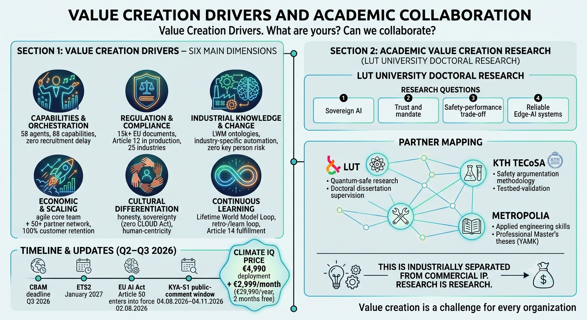

Six Drivers of Value — and the Research Behind Them
06.08.2026 · Risto Anton Päärni · Espoo, Finland

The question we keep getting asked
"Where does the value actually come from?" Investors ask it one way, customers another, and our own team asks it every retro. This note is the answer we settled on this quarter — ten drivers, organized into six dimensions, each one traceable to a number rather than a slogan.
1. Capabilities & orchestration — duplexing agents instead of hiring
58 agents, 88 capabilities across ten Lifetime World Model ontology classes. The offer to a customer is not "buy software" — it's "get the role filled by Friday" instead of a six-month recruitment cycle. 95% of production decisions still require human sign-off; agents accelerate judgment, they don't replace it. We built a tool — the Interruption Counter (Keskeytyslaskuri) — that puts a euro figure on what a capability gap actually costs: context rebuilt from scratch, lost momentum, a single person who knows the process walking out the door.
2. Regulation & compliance — automated ahead of the obligation
15,000+ EU documents indexed, with a CELEX reference behind every decision the system makes. EU AI Act Article 12 auditability has been in production since March 2026 — Article 50 became enforceable on 2 August 2026, and we were already there. A Chronos agent tracks the compliance calendar across 25 regulated industries and alerts before a deadline, not after. One customer's monthly compliance workload went from 60 hours to 8 — an 87% reduction, not a projection.
3. Industry knowledge & change — no key-person risk
Each customer's Lifetime World Model ontology lives on hardware they own — a Control Room or Situation Room — not in our heads or our cloud. When regulation changes, the agent updates; nobody has to be re-hired, and nobody who leaves takes the knowledge with them. Eleven industry-specific agents (steel's CBAM carbon accounting is one example) exist because the knowledge is encoded once and reused, not re-derived per engagement.
4. Economics & scale — enterprise capacity at startup cost
The core team is two people: a CEO and an Office Chief. Comparable compliance-tooling competitors run 100–300 employees. We scale by adding governed agents and a 50+ partner network built since 2020, not by adding headcount. €59,900 in contracted enterprise-pilot value landed in Q1/2026, plus a licensed transport operation that keeps the company at cash break-even — all on the same two-person core.
5. Cultural differentiation — Finnish values as a business asset
One published price for everyone — no negotiation, no hidden terms. Sovereign infrastructure — UpCloud Helsinki plus NVIDIA DGX and Jetson at the edge — means zero exposure to the US CLOUD Act and data that never leaves the EU. And the framing stays "AI augments, never replaces": the decision to change headcount is the customer's, never ours to make for them. It's a deliberately un-American pitch — evidence before adjectives.
6. Continuous learning — the loop that never resets
Every customer engagement feeds back into the product. The compliance automation built for one transport customer's 87% time reduction became a Climate IQ feature within the same quarter. EU AI Act Article 14's human-oversight requirement is already satisfied by our six-step HIC Learning Outcome protocol — most competitors are still building toward it. Nothing gets lost: every insight lands in the knowledge base, a field note, and an HTML record, in that order, every time.
The seventh dimension: research that isn't for sale
Alongside the product, Risto is pursuing a doctoral research track — sovereign AI architectures, trust and delegation in autonomous systems, safety-versus-performance trade-offs, and reliable edge computing — with LUT University leading, KTH Royal Institute of Technology's TECoSA group validating the security arguments, and Metropolia University of Applied Sciences turning findings into working prototypes.
This research is deliberately walled off from commercial ownership. It publishes in peer-reviewed venues, under open licenses, with no patents attached — specifically so that raising capital never has a reason to bend a scientific conclusion. What it can do is inform European AI policy and the technical standards bodies (ETSI, ISO, CEN) working on sovereignty requirements, and, in time, feed insight back into the product roadmap without ever transferring ownership.
Why this matters to you
If you're evaluating us as a customer, an investor, or a research partner, the six commercial dimensions are what makes the number on the invoice defensible, and the seventh is what makes the science behind it credible independent of whether the invoice gets paid. Both halves are load-bearing.
Risto Anton Päärni — Founder, CEO, Lifetime Oy.
Subscribe to Lifetime Scope Journal
Weekly insights on EU compliance, AI agents, and industrial transformation.
Subscribe